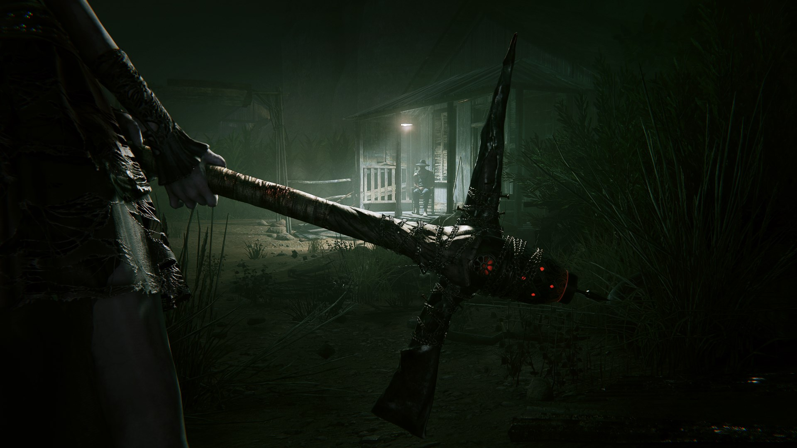

Outlast 2
Cyberpunk 2077 is a 2020 action role-playing video game developed and published by CD Projekt. The story takes place in Night City, an open world set in the Cyberpunk universe. Players assume the first-person perspective of a customisable mercenary known as V, who can acquire skills in hacking and machinery with options for melee and ranged combat.

CD Projekt released Cyberpunk 2077 for PlayStation 4, Stadia, Windows, and Xbox One on 10 December 2020, with PlayStation 5 and Xbox Series X/S versions planned to follow in 2021.
